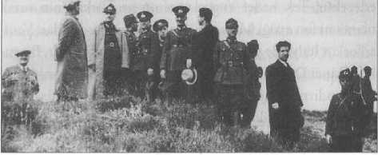

7
REİS-İ CUMHUR
Tek Adamlık
DAHA EVVEL DE belirtildiği üzere, Türk milleti tarihinde monarşist olmamıştır ama monarklarını sever. Osmanlı İmparatorluğu da Türklerin imparatorluğudur, bu cumhuriyet de Türklerin cumhuriyetidir. Onu kuran monarkları,başbuğları, mareşalleri unutmayız, biz unutsak bile zaten başkaları menfî veya müspet olarak bu tarihî şahsiyetleri kurcalar. Bu cumhuriyeti kuran kumandanları da unutamayız. Bu vakayı kabul etmek insanın hem tarih yorumunu rahatlatır hem de politikasının ne olacağını daha iyi gösterir.
Cumhuriyet’in kuruluşu itibariyle diktatoryanın teorisi yapılmış değildir. Şahıs idare edecek diye bir teori yoktur. Tam aksine cumhuriyetin kurucu kadroları Enver Paşa’dan, İttihat Terakki’nin “triumvira”sından, hatta İttihat Terakki içerisindeki Merkez-i Umumî diktatoryasından çok şikâyet ediyorlardı. Buna da Merkez-i Umumî diktatoryası diyoruz; çünkü İttihat Terakki’nin de iç yapısını ele alırken acımasız olunmamalıdır. Totaliter partilerde bir polit büro olur ve üyelerin sözleri sanki eşit şekilde geçer. Hâlbuki bu böyle değildir; orada bir kişinin sözü geçer. Faşist partilerde bu durum zaten “Duçe” veya “Führer” diye açıkça dile getirilir. İttihat Terakki’de ise Merkez-i Umumî diktatoryası vardır, üç hatta beş kişinin sözü hemen hemen eşit ağırlıkta geçerdi.
Mustafa Kemal demokrasi aldatmasına (!) karşı diktatörlüğü koyan teoriyi benimseyenlerden değildir. İki kere çok parti denemiştir. Tabii bu partiler onun istediği partilerdi. (Atatürk’ün istediği çok partili sistem 1950-60 arasında oldu. Yani aşırı solun pek bulunmadığı ve aşırı sağın yasak olduğu, belirli çizgiler etrafında giden partilerin olduğu birçok parti dönemidir.) Ama bunun bile olamayacağı anlaşıldı. Çünkü birinci denemede ittihatçılar hâkim oldu. Terakkiperver Fırka’ya mürteci denen taife de girdi. İkincisinde asıl solcular girdi. Ama Serbest Fırka denemesinde solculardan çok gene öbür grubun sesi çıktı. Neticede partiyi kurmakla görevlendirilen yakın arkadaşı bile işin nereye gittiğini fark edemedi. Mesela kız kardeşi Makbule Hanım en başında icazetle o tarafa katılmıştır ama kendisini o kadar kaptırmış ki laikliğe karşı propaganda yapıyor. “Kendi kurdurduğumuz ve göz yumduğumuz partiye karşı daha toleranslı davranmamız gerekir" dendiği hâlde Kılıç Ali, Ali Çetinkaya gibi isimler bu partinin arkadaşlardan birine görev olarak verildiği düsturunu ve mutabakatını unutarak alenen saldırıya geçiyorlar, Ali Fethi Bey’i bile hıyanetle suçlamaya başlıyorlardı ve bu da çok yaralayıcı oluyordu.
O, tek parti idaresinin başındaki liderdi. Doğal olarak buna demokrasi denmez. Zaten faaliyette olan başka bir parti yoktu ama 1924 ve 1930’da iki kere bundan dönmeyi denemiştir. İkisinde de çok ciddi muhalefetle de karşı karşıya gelmişti ve muhalefet onun istediği gibi gitmiyordu. Atatürk’ün istediği, muhalefetle belirli asgari düzeyde, belirli noktalarda uzlaşısı olsun idi. Bunu Türkiye’deki muhalefet ancak 1946 demokrasisinde yapabilmişti. Yine aynı kalıp; Halk Partisi’nden ayrılan bir grup, muhalefeti oluşturan grup, rejimin temel prensipleri, temel çizgileri üzerinde iktidar partisi ile uzlaşı içindedir. Bundan dolayı iki parti (CHP ve DP) bilhassa yeni doğan sol partileri çok acımazca harcamışlardı. O asgari müştereki anlamak mümkündür. Öbürleri de hazırlıklı değildi, ne yaptıklarını, ne dediklerini pek bilmiyorlardı. Mürteci dedikleri takımı da saf dışı etmişlerdi. Orada gaddarca değil başarılı ve yumuşak bir iniş vardı. Kimse Stalin Rusyası’ndaki gibi bir mağduriyete uğrayan, kilise takımının benzeri olan zavallı görevlilerden, manastır benzeri zavallı dergâhlardan bahsedemez. Ama bir olaylar ve tedbirler silsilesi de var. Nedir bunlar? Saf dışı ediliyorlar ve bir müddet sonra uzlaşıyorlar. Uzlaştıkları noktalar bellidir; cumhuriyet ve laiklik... Uzlaşıdan sonraysa derecesi üzerinde çatışmaya başlıyorlar, ama o zaten Halk Partisi içinde de öyleydi. 1924 Türkiyesi’nde ve hatta 1930’daki Serbest Fırka deneyiminde iki taraf böyle bir çizgide uzlaşmayı becerememiştir. Onun için muhalif parti kapatılmış, çok parti deneyimi gitmişti. Zaten o dönemde dünyada demokrasilerin ölüm ilâmı çıkartılıyordu ve hava da uygundu.
Mesela Çankaya sofrasında Atatürk, sık sık 1929’dan sonraki uygulamalardan rahatsız olduğunu söylemekte, hatta diktatörlükle bağlantılı ifadeler kullanıyor. “Bu vaziyetten hoşnut değilim, ben de fani bir insanım ve biz cumhuriyeti kendimiz için kurmadık. Ama görüntü bir çeşit diktatörlüktür. Yani oraya dönüşmüştür” demişliği vardır. Hatta Atatürk, İsmet İnönü’nün Recep Peker’e hazırlattığı bir raporu görünce, “Bu düpedüz İtalya faşizmidir" diyerek sert tepki göstermiştir. İtalyan Faşizmine, Duce’nin açıkça ifade ettiği Türkiye üzerindeki emellerinden dolayı düşman ve müteyakkızdı.
Çankaya Köşkü’nün ilk yılları...
Atatürk’ün kendi döneminde uyguladığı sistem kuvvetler birliğidir. Atatürk, kuvvetli bir adam olduğu için, cumhurbaşkanı olarak her şeye müdahale ediyordu. Ama İsmet Paşa’nın başbakan olduğu bir yerde bilhassa bu tip müdahalelerin pek kolay olmayacağı, müsaade edilmeyeceği de açıktır. İsmet Paşa, işi kendi başına götürüyor ve öyle götürmeye alışıktı.
Tek Parti
Rejim niye tek partiydi? 1930’ların dünyasına bir bakalım; nerede var o çok partili demokrasiler ve nasıl bir şey? Bernard Lewis, Viyana’daki demokrasi forumunda o müstehzi ifadesiyle kurşun gibi bir laf söyledi ve Avrupalı muhatapları hiçbir şey diyemedi; Lewis, “Demokrasi İngilizce konuşan milletlerin rejimidir" dedi. Bakarsanız doğru bir hükümdür. Çünkü Batı Avrupa ne zaman demokrat oldu ve ne dereceye kadar? Hepsi İkinci Dünya Savaşı’ndan sonraki gelişmelerdir. Fransa’nın demokratik yapısı vardı ama o bile kaç kere fire verdi, hem de ağır ölçüde... Lewis böyle bir dünyanın ortasında olup biteni daha doğru değerlendiriyordu.
Atatürk’ün bu çok partili düzene geçiş için yaptığı denemelerle ilgili çeşitli iddialar vardır. Mesela ülkede kimler kendisinin yanında, kimler ona karşı bunu görmek ve karşı olanları tepelemek için yaptığını söyleyenler vardır. Bunlar kim yanımda kim değil, açığa çıksın da göreyim gibi çocuk oyuncağı işler değildir. Bugün sadece İstanbul’da 30 bin polis var, onu da az buluyoruz. O günkü Türkiye’de kaç polis var biliyor musunuz? Genel nüfus 17 milyon ve polis sayısı 9 bin civarındaydı. Bu insanlar bu teşkilatlanmayı daha iyi yaptılar. Bazı deneylerin şakası yoktur. O yüzden bu söylemler kahvehane tabirleridir. İddia edilenler gerçekse onu anlamak için başka yöntemlere başvurulmalıdır.
Hakikaten Batı demokrasilerinin safında görülmek istemiştir. 1924’te Batı demokrasisi dediğimiz çevre nedir? Bütün kıtada, yani bugünkü Avrupa Birliği’nin esas üyelerini oluşturan coğrafyada demokrasi yoktu. Hatta dünyada bir diktatörler devrinden bile söz edebiliriz. Hitler, Stalin, Mussolini gibi..
Ama sonunda öyle bir rejim ki bunun adı otoriter rejimdir. Totaliter değildir. Dikkat ediniz ki komünist diye içeri giren adam daha sonra o rejimde genel müdür oluyor: Vedat Nedim Tör. Komintern dosyaları arasında Türkiye’den tek layihası olan komünist genel sekreter Vedat Nedim Bey’dir. Ceberut ama aynı zamanda da pederşahi bir devlet modeli vardır ki kültür de oraya oturur. Kademe kademe vatandaşı, kanun ve nizamı farklı olmakla birlikte bütün kıta budur. Demokrasi dediğimiz rejim aslında Anglosakson’dur. Zaten böyle bir gelenekten geldiği için de Avrupa’da bazen ölçüsüzlük ortaya çıkmaktadır. Demokratik uygulamalar getireceğim derken başka zümreler için baskıcı bir ortamın ortaya çıktığı da görülüyor.
En itirazsız İnkılab: Soyadı Kanunu
“Vatandaş" oluşturmaya yönelik İnkılabçılığın içinde “Soyadı Kanunu" vardır. Napolyon Avrupa’yı istila edip prensiplerini oraya yerleştirmeye çalıştığında ve köylülere soyadı almalarını söylediğinde Hollanda ve Alman bölgesinde kır hayatından alınmış soyadları ortaya çıkmıştır. Türkiye’de de o zaman insanlar kendi durumlarını anlatan soyadları almışlardır. Türkiye, aristokratik normların bulunmadığı bir toplumdur. Türkiye’de olmadığı gibi Osmanlı egemenliğinde yaşamış başka ülkelerde de (Bulgaristan, Yunanistan, Makedonya, vb.) olmamıştır. Fakat bazı uzak Balkan ve Arap ülkelerinde yerli hanedanlar kalmıştır. Osmanlı toplumunda paşa devşirilmiş bir kişidir. Padişah damadı da olsa onun çocukları işlerini bilmezlerse servetlerini, mevkilerini kaybedebilirler. Oysa mesela Rusya’da öyle değildir. Ailesinden aldığı unvanla aristokratik hayatı sürdürebilir ve devletten belirli ölçüde himaye görürdü. Osmanlı’da seçkinlik iktidar sahibi olmaya bağlıydı ve aristokratik bir yapı yoktu. O yüzden vatandaşlığa geçişte hiçbir zaman ciddi bir çatışma olmamıştır. Aristokratik tabakaya karşı bir “vatandaşlık” yaratılmamıştır. Türkiye en az titulature (elkab) kullanılan bir ülkedir. Bu nedenle Soyadı Kanunu en az itirazsız kabul edilen reformdur. 1970’lerden sonra “sayın’a ilave olarak bürokratik unvanlar çok kullanılmaya başladı. Nasıl bir bürokratik ihtiyaç olduğu ise herkesin malumudur.
Soyadı kanunu konusunda kasabalarda nüfus memurları günün diktatörü kesildi. İnsanlara soyadı telkin ettiler, seçilen soyadlarını da beğenmediler veya “zaten var" dediler. Kanun ve bu anlamdaki tüzükleri okuyacak kabiliyetleri de yoktu. Hatta bazı soyadlarını yanlış yazdılar, bunlar sonradan davalara sebep teşkil etti. Demokrasinin bilhassa taşrada yerleşmemiş olması bir problem yarattı. Buna karşılık her an istediği soyadını alan veya bunu değiştiren kasaba eşrafı da doğrudan doğruya bir edebiyat nüktesi olacak dereceye gelmiştir.-^111
Atatürk arkadaşlarına soyadı verdi. Bunlar askerlerin çoğu zaman yaptıkları muharebeler ve kazandıkları başarıyla ilgiliydi. Hatta Perihan Arıburnu’nun babası dolayısıyla damadına da bu soyadı telkin edildi, o da bunu kabul etti. Arıburnu kahramanı olan şehidin adı bütün aileye kaldı. İnönü’nün ve diğerlerinin soyadını o seçti. Atatürk soyadının üzerinde de onun için anlaştılar ve bu soyad sadece kendisine mahsustur. Hiçbir akrabasına, kız kardeşine dahi verilmemiştir.
Tarih ilmi açısından, Çanakkale zaferinden sonra, yani tuğgenerallik aldığı döneme kadar, binbaşı, yarbay ve albayken adı Mustafa Kemal Bey’dir; ondan sonra Mustafa Kemal Paşa olur. Büyük Millet Meclisi’nin kendisine Sakarya Zaferi’nden sonra kendisini taltif ettiği “Gazi” unvanı ve müşirlikle birlikte Gazi Mustafa Kemal Paşa olur ve soyadı kanununa kadar böyle bahsetmeniz icab edebilir. Atatürk ise soyadından sonra verdiğimiz sivil adıdır. İsteyen hep Atatürk der, konuşurken de kolayımıza gelir. Ama ben biraz tarihçi alışkanlığımdan dolayı, yeri geldiğinde “Gazi Mustafa Kemal Paşa” unvanını kullanıyorum.
Evet, “paşa” geleneksel bir unvandır. Kendisi
‘general" hitabını istemiş, fakat “paşam" dedikleri zaman da hiç itiraz etmemiştir ki anane de budur.
Balkan Antantı ve Sadabat Paktı
Balkan Paktı Türkiye tarihinde yeni bir olay değildi. II. Abdülhamid 1878’den sonra Balkan devletleriyle ayrı ayrı yakınlaşarak bir nevi Balkan birliğini önleme çabasındaydı. Bu bir pakt değildi, daha doğrusu bir paktı önlemek ve Türk imparatorluğunun Balkanlar’da kontrolünü sağlamak amacını gütmekteydi.
Yapılacak hareketlerin ve izlenecek yolun içerisinde en başta Yunanistan, Bulgaristan ve Sırbistan üçlüsüyle ilişkiler gelmektedir. İlginç bir şey, bilhassa Nicolae Titulescu gibi Rumen Hariciye Nazırı sayesinde Romanya ile ilişkiler iyi bir şekilde kurulmuştu. Bu en azından Antonescu’nun darbesinden önceki dönem için böyledir.
Yunanistan’a gelince Venizelos’la olan barış çabaları, ki bilhassa mübadele olayıyla başlamıştır, Metaksas iktidarı alana kadar da devam edecektir. Ne var ki Türkiye’nin büyük alerji duyduğu İtalya ile temasa geçmeme ve onu işe katmama prensibi Venizelos tarafından ihlal edildi ve Venizelos Roma’ya gitti.
Diğer Balkan devleti Bulgaristan’ın da buradaki durumu önemlidir. Maalesef Bulgaristan’ın Sırbistan ile olan Makedonya problemi ve Romanya ile Dobruca meselesi ve yine Yunanistan’la olan ebedî çekişmesi onun Balkan Paktı’na aktif olarak katılmasını önledi.
Atatürk, Ahmet Zog’la iyi ilişkiler kurmuştu, cumhurbaşkanıyken bu böyleydi. Krallığını ilan edince ön planda bunu bir cumhuriyetçinin cumhuriyetçilik ilkesine ihaneti olarak gördü. Fakat daha önemlisi, Arnavutluk ısrarla ve kendi açısından haklı olarak Balkanlı komşularına karşı şüphe içerisindeydi, bir ittifaka giremezdi. Venizelos politikasını daha beter bir şekilde yaşadı. Arnavutluk ister istemez gittikçe İtalya nüfuzuna girdi. Bu durum sonunda Ahmet
Zog’un tahtını kaybetmesine bile neden olmuştu.
Her halükârda Balkan birliğinin ve paktının romantik tarafları da vardır. Yunanistan tarafının milletvekilleri tıpkı Türk milletvekilleri gibi birinci mevkide bedava seyahat ediyorlar, millî bayramlara mutlaka çok dikkat ediliyordu ve hiç şüphesiz ki her iki ülkedeki azınlıkların kendi açılarından daha rahat hareket edebildikleri, entegre oldukları bir dönemdir. Patrikhanenin Türk Ortodoks karakteri meselesi daha önceden bitmişti. Burada çok anlaşılamayacak bir şey, Hüseyin Cahit Yalçın’ın Papa Eftim’in Patrikhane hâkimiyetine çok karşı çıkışıdır. Şurası da bir gerçek ki 1930’larda Patrikhane meselesi klasik şekliyle, yani bugünkü yapısıyla bir statüye oturtulmuştur.
Venizelos 1930’da şöyle bir nutuk atmıştır: “Beni suçlayanlar Yunan ordusunun burada kurban olduğunun unutulduğunu ve Ankara’ya seyahat yaptığımı söylüyorlar. Anadolu yaylası, şu anda gezdiğim yer, bir harb alanıydı ve hâlâ izlerini taşıyor. Niçin ama bunu unutmayalım, Türkler unutmuş ve bizimle iş birliği yapıyorlarsa? ”1112]
1 Kasım 1930’da bu pakt mecliste resmen açıklanmıştır ve 13 Ocak 1934’te de Maximos Roma’yı ziyaret ettiğinde bunun Mussolini’ye karşı bir pakt olmadığını söylemiştir. Kral Alexander’ın nezdindeki Belgrad’daki Türk sefiri de Yunanistan’ın bu yakınlaşmasından Kral’ın endişe duyduğunu söylemiştir ki Türkiye de buna katılmaktaydı.
Şüphesiz bu gelişmeler içinde Balkan Paktı’nı Sadabat Paktı’yla bir arada düşünmek gerekir. İran ve Türkiye’nin tarihindeki en önemli yakınlaşma dönemidir ve belirgin ürünler ortaya çıkmıştır. Ön planda da, yukarıda da değindiğimiz gibi, kültürel ürünleri görüyoruz.
Bu dönemdeki paktlar Sovyet Rusya’ya karşı değildi, 1933’te katiyyen Almanya’yı rahatsız etmesi de istenmeyecektir. Ama İngiltere ve Fransa ile de yakınlaşma devam edecektir. Tek hedef Yugoslavya’nın ve Türkiye’nin ortak olarak nefret ettiği Mussolini İtalyası’dır. Öte yandan
Venizolos’un İtalya ile yakınlaşmasına da ses çıkarılmadı. Bu galiba İkinci Dünya Savaşı’ndan evvel sanayii zayıf, ordusunu silahlandırmakta geri kalan bir memleket için yapılacak en başarılı bürokratik ve diplomatik çözümdü. Yeni Türkiye İttihatçı dönemin aksine diplomasiye çok önem vermekte ve başarılı olarak kullanmaktaydı.
1930’lu yıllarda totalitaryanizmin yayıldığı bir dünya içerisinde, Kemalist Türkiye, başarısız bir Serbest Fırka denemesinden sonra her ne kadar çok partili rejime bir süre için veda etmek zorunluluğunu hissetmişse de iç politika ve toplum hayatının örgütlenmesinde, daha çok otoriter rejimin kalıplarına sadık kalmıştır. Dış politikada ise Türkiye, Nazi Almanya ve Faşist İtalya’nın nüfuzundan şiddetle kaçındığı gibi, büyük devletlerle ittifak ve dostluk yerine, Balkan ve Orta Doğu ülkeleri arasındaki ittifaklar sistemine ağırlık vermekte, bunu barışın ve bağımsız dış politikanın gereği olarak görmektedir. 1933 Ekim-Kasım aylarında Balkan devletlerinin hükûmet temsilcileri arka arkaya
Ankara’ya gelmektedir.
Nihayet sonuçta 9 Şubat 1934’te Yunanistan, Romanya ve Yugoslavya, Türkiye ile birlikte Balkan Antantı’nı imzaladılar. Paktın başını çeken Türkiye, Dobruca, Makedonya gibi çetrefil noktalar yüzünden Bulgaristan ve Arnavutluk’u pakta sokamamıştı. Bu iki devlet, toprak istekleri ve önemli ölçüde de İtalya ve Almanya’nın nüfuzu yüzünden paktın dışında kaldılar ve her iki ülkede de Faşist İtalya ve Nazi Almanyası’nın etkisi gittikçe kuvvetlendi. Aynı dönemde Türkiye’nin Sovyetler ile de dostane ilişkileri devam etmekteydi. Ankara Hükümeti, Voroşilov’un Türkiye ziyaretine büyük özen göstermiştir. Ama bu, Türkiye’nin rejim bakımından Sovyetler Birliği’ne yakınlık gösterdiği anlamına gelmez. Örgütlü bir solun bu dönemde faaliyet göstermesi düşünülemezdi.

Harp Akademisi Komutanlığı tarafından düzenlenen manevrada uçakları izlerken, Mayıs 1936.
Balkan Antantı yanında Orta Doğu ülkeleriyle de Sadabat Paktı imzalanarak geniş bir bölgesel ittifaka gidilmiştir. Büyük devletlere karşı bölgesel ittifak sistemine gitmek Kemalist Türkiye’nin dış politikadaki başarısıdır. Bu özgün yol, iki büyük harbden sonra Tito ve Nehru gibi liderler tarafından, daha geniş alanda izlenecek ve kolonyalizmden kurtulan ülkelerin ekseriyeti teşkil ettiği bir tarafsız Üçüncü Dünya bloku ortaya çıkacaktır. 1930’larda Türkiye kolonyalizmleri dolayısıyla nefret uyandıran İngiltere ve Fransa, faşist ve totaliter saldırganlığı temsil eden İtalya ve Almanya’nın ve Balkan ülkelerinin pek de sempati duymadığı Sovyetler Birliği gibi büyük devletlerin dışında yeni bir güç yaratma çabasındaydı.
1930’larda Balkanlar’daki Rejimler ve Kemalist Türkiye
Bulgaristan için Neuilly hükümleri^113 tıpkı Türkiye için Sevr neyse o ölçüdeydi. Ordu terhis edilmiş, silahlar toplanmıştı. Bulgaristan, İtilaf Devletleri’ne karşı hiçbir ittifaka giremeyecekti. Buna rağmen Millî Mücadele’de Stambuliski gayr-ı resmî olarak Mustafa Kemal’i desteklemişti. Trakya ordusu bozguna uğrayınca onlara iltica edildi, Bulgar ordusunun silahları Türkiye’ye gönderildi. Stambuliski, Sevr’in hükümlerinin iptal edildiği gün Neuily’nin de iptal edilmesini arzuladıklarını söylemişti. Bulgaristan’da kurulan rejim, topraksız köylüler ve tarım işçilerine dayalı bir rejimdi ama 1923 sonlarında Profesör Tsankov, Harbiye Nazırı ve ordunun bir grubu ile darbe yaparak Stambuliski’yi katletti. Komünist Partisi de aynı akıbete uğradı. (O tarihe kadar 20 milletvekili ile temsil ediliyordu.) O halde görülüyor ki, ilk elde faşizan bir rejim yerleşmekteydi. Bununla birlikte bu rejimin güçsüz tarafları da vardı. O yılların gazetelerinde Bulgaristan’da solcuların yaygınlaştığı, talebelerin gösteriler yaptıkları gibi haberler görülebilir. Bu Doğu Avrupa ve Balkan rejimleri hiçbir zaman Almanlarınki gibi sert, bükülmez rejimler olarak görülmemelidir. Toplumlarda belli ölçüde gizli gizli de olsa belirgin bir sol faaliyet vardır, sol protesto, toplanma ve gösteriler söz konusudur.
Romanya’da 1930’larda Yorga’nın Çiftçi Hükümeti, Antonescu liderliğindeki Lejyonerler denen faşizan subaylar tarafından devrildi. Bulgaristan ve Romanya’da Çar ve Kral darbelere karşı seslerini çıkarmadılar. Romanya da giderek Alman Nazizminin boyunduruğuna girdi, çünkü önce kendine en yakın cephe o idi. Ayrıca Horthy Almanlarla anlaşarak Romanya’dan
Transilvanya’yı, Bulgaristan da yine Almanya ile anlaşarak Dobruca’yı alacaklarını hesaplamış ve buna engel olmak için Almanlara yanaşmışlardı.
Arnavutluk’ta Ahmet Zog cumhurbaşkanı iken 1924’te kraliyetini ilan etti. Bu, Arnavutluk ile Türkiye’nin iyi ilişkilerini soğuttu. Elçiler bir süre karşılıklı geri çekildi. Sonra Atatürk ilişkileri tekrar başlattı ama Arnavutluk elçisi Ruşen Eşrefi, İtalyan faşizmine sempatizan gözükecek hiçbir davranış ve sözde bulunmaması talimatı ile gönderdi.-*414 Çünkü bu yıllarda Arnavutluk’ta tamamen İtalyan nüfuzu vardı.
Yunanistan’da Venizelos kralcıları yok edip cumhuriyeti ilan ettikten sonra, bu rejim bildiğimiz darbeci bir kumandan tarafından (Metaksas) yok edildi ve kral geri çağrıldı. Bu dönemde Yunanistan’da, Balkanlar’da görülmeyen bir şekilde, bir komünist avı yaşandı.
Bu büyük bir devlet terörü dönemidir. Metaksas Almanya ve İtalya’ya meyleden bir adam oldu. Ama İkinci Dünya Savaşı bünyeyi değiştirdi ve Yunanistan Mihver Devletleri değil, Müttefikler safında yer aldı.
Yugoslavya’nın adı o zaman Sırp-Sloven- Hırvat Krallığı idi. 1920’lerde adı Yugoslavya Krallığı’na çevrilmek istendi. Federalizme karşı çarpışan milliyetçiler isyan ettiler. Bu arada Karadağlı Raçiç tarafından parlamentoda Radiç adlı bir Hırvat milliyetçi mebus kurşunlandı. Bundan sonra çıkacak karışıklıkları yatıştırmak için ordu kral adına idareye el koydu ve böylece ülkede parlamento yaşamı sona erdi.
Tedricen bütün Balkanlar’da demokrasinin bittiği, bölgenin büyük devletlerin sultasına girdiği, tek parti ve tek şefin ortaya çıktığı bir dönem başlamıştır. Aynı dönemde Türkiye Cumhuriyeti tek partiden çok partiye geçmeyi iki kere denemektedir. Şu kadarı bilinmelidir ki, iki harb arasında demokrasinin ve demokratik, liberal zihniyetin iflas ettiği bir dünyada
Türkiye’nin demokrasiye geçişi planlaması, demokrasiyi hayat tarzı olarak seçmesi (1924 Anayasası buna mümasildir) ve demokrasiyi toplumsal gelişmenin ve düzenin ana hedefi olarak takdim etmesi tarihî bakımdan önemli bir olaydır. İki harb arası Türkiye tarihi, bütün Türkiye tarihinin iftihar edeceği bir dönemdir. Her şeyden önce 1920’lerden sonra Türkiye’nin içinde bulunduğu dünya atmosferini kavramak gerekir.
Almanya’da Weimar Cumhuriyeti savaştaki yenilgi üzerine 1919’da Friedrich Ebert’in başını çektiği sosyal demokratlarca kurulmuş, fakat anayasal sistem olarak Alman İmparatorluğu sistemini Cumhuriyet’e uygulayarak otoritaryanizmi devam ettirmiştir. İşsizlik ve enflasyonun yıktığı Almanya galip devletlerin baskısı, talep ettikleri tazminat, toprak ilhakı ve işgal ile bunalmıştır. 1920’lerin sonunda komünistler, sosyal demokratlar ve Naziler çatışma içindeydi. 1920’lerde zayıf olan Nazi Partisi, 1930’larda ani bir güçlenme göstermişti.
Alman Komünist Partisi iki harb arasında Avrupa’nın en güçlü komünist partisiydi. Ancak tarihî kişiliği olmayan bir lider kadrosu ve Komintern’in verdiği yanlış taktikle kendini kitlelerden uzaklaştırıp Nazizm ve Prusya otoritaryanizmi karşısında izole etti. Sosyal demokratlar inatçı ve taviz vermez tutumlarıyla, Alman komünistleri ile demokratik cephe kurma konusunda olumsuz davrandılar. Oysa Naziler muhafazakâr partilere karşı tavizkâr davrandılar ve ittifak kurabildiler. 1933’te Nazi Partisi seçimle iktidara geldi.
Alman proletaryası kalabalıktı ama İngiltere ve Fransa’nın, hatta İtalya’nın tersine sadece büyük metropollerde toplanmamıştı. Sendikacılık hareketi Batı Avrupa’nın diğer ülkelerindeki gibi radikal ve mücadeleci bir geleneğe dayanmıyordu. Kasaba proletaryası niteliğine sahip Alman işçi sınıfı, Nazi Partisi’nin propaganda ve örgütlendirme faaliyeti karşısında erimeye başladı. Propaganda ve örgütlendirme, terör ve sindirmelerine göre sempati toplayacak sloganlar, her sınıf ve zümreye karşı ayrı ayrı vaatler Nazileri güçlendirdi. Tarihi geçiş dönemlerinde ülkelerin kaderini, tarihin genel kuralları değil, bu gibi mekanizmalar tayin eder. Komünist Partisi ve sosyal demokratların sekter davranışı yanında, merkezci partiler ve liberallerin de İngiliz muhafazakârlar ve liberalleri gibi olmayıp, Nazizm ve otoritaryanizme yatkın olduğunu hatırlarsak, 1930’lar Almanyası’nın nereye gittiği anlaşılır.
Alman Nazizmi ırkçıdır ve jenositle suçlanacaktır. Bu son derece örgütlü bir toplumda ortaya çıkmıştır. Nazizm günün her saati insanları kontrol edebilecek bir mekanizmanın, bir örgütlü toplumun başına geçmiştir. İtalyan faşizmi bu nedenlerle Nazizm’e nazaran daha insanî bir hata olarak kabul edilmelidir. Mussolini Roma’ya bir faşist yürüyüşü yaparak ve darbeyle iş başına geçmişti. İlk anda geçmiş iktidar döneminin birikimini kullanarak zirai, sınai alanlarda ve ulaştırmada bazı başarılar sağlandı. Bu tedbirlerle geniş bir kitleyi yanına aldı, ama
İtalya’da faşizm hiçbir zaman Nazizm derecesinde şiddetli ve kalıcı bir etki sağlayamayacaktı.
Faşizm ve Nazizm’in beraberliği aslında harb başladıktan sonra ortaya çıkan bir şeydir. Harbden evvel bu ikisi henüz birbirine rakip iki sistemdir (mesela Avusturya’daki darbede Dolfussçular Nazizm’e karşı Mussolini tarafı ile bileşiyorlardı). Bu dönemde Orta Avrupa’da Mussolini henüz daha insani olarak mütalaa ediliyordu. 1940’da birlik gerçekleşmiştir.
Bu arada 1936’da İspanya İç Savaşı’nda Cumhuriyetçileri Sovyet Rusya yanında demokratik ülkeler, Franco’yu da İtalya ve Almanya desteklemişlerdir. Türkiye’nin tavrı açık değildir. Cumhuriyetçilerin yanında savaşan bir gönüllü birlik vardı. Cumhuriyetçilerle silah ticareti yapanlar vardı. Franco’ya resmi ve gayr-ı resmi grup ve heyet yollamışlardı.-*115
Gazi Paşa İstanbul’a Küsmüş müydü?
İstanbul muhalefetin de kültürün de merkeziydi; tirajları düşük olsa da (ancak birkaç bin) epeyce gazete ve okur kitlesi vardı. Türkler henüz gazeteyi okumaktan çok, okunanı dinliyordu. İstanbul, romantik devrimizde, zor devrimizde, yani Anadolu’daki Meclis Hükümeti zamanında ve sonra da Ankara’dakilerin hoşlanacağı bir muhit değildi. Bizim muhalefet diye bildiğimiz kadar bilmediğimiz çevreler de var. Onun için Gazi ve etrafı çok hoşlanmıyor ama o İstanbul yine de vazgeçilmez bir sevgilidir. Atatürk uzun bir müddet uğramamıştır. Ne zaman İstanbul’a geldiği belli değil mi? O vakte kadar vapur gezisi oluyor, kıyılara uğramıyor... Samsun’dan çıkmış, geceleyin Boğaz’dan geçiyor, Çanakkale’ye gidiyor, şehirde durmuyor, herhalde uzaktan bakıyor. Hatta belki ay ışığı altında geçiyor, gidiyor. Ama sonrasında, tabiri caizse İstanbul ile barışıyor.
1 Temmuz 1927 günü Gazi Mustafa Kemal Paşa İstanbul’a döndü. Haydarpaşa’da muhteşem bir karşılama yapıldı. Burada vilayet ve hükümetin tertibinden çok halkın kendi katılımı rol oynadı. Karşılayıcılar, bilhassa hanımlar, modern giyinenler ön cepheye çıkmışlardı. O günden bugüne kalan hatıra, Şişli semtini bir boydan bir boya kat eden Halâskârgazi caddesidir. Atatürk şehri 15 Mayıs 1919’da, Karadeniz bölgesine Fevkalade Ordu Müfettişi olarak tayinle giderken bırakmıştı. O günden 1 Temmuz 1927 gününe kadar terk ettiği şehre gelmedi. Gazi Mustafa Kemal Paşa bu şehirde görünmemeyi tercih etmiştir. Onun için zafer ve zafer yürüyüşünün yeri İzmir’di.
İstanbul’un kurtarıcıda hoşnutsuzluk yaratan tarafları vardı. Muhalefet basınla el ele veya geçici ittifak halinde çalışıyordu. Takrir-i Sükûn kanununa kadar bu üslûbları devam etti. Gazete, patronun elinde bağımsız bir dünyaydı. Bir bakıma sansüre gönüllü giren bir iletişim dünyasından daha çok basına benzedikleri açıktır. Bu muhaliflerin içinde Mustafa Kemal Paşa’nın canını en çok sıkanlar İttihat ve Terakki mensublarıydı. Hatta bunların içinde Hüseyin Cahit Yalçın gibi Enver ve Talat’a karşı cephe alan, onları tenkit eden biri de vardı. İstiklâl Mahkemeleri’nden bazı İttihatçılar da geçti. Sadece İzmir suikastı davasında yargılanıp idam edilenler değil, bir şekilde hayatın dışına çıkarılanlar da oldu. Gazi Paşa’nın yeni grubunda ve partisinde müzmin İttihatçı faktörünü aramak biraz gayretkeşliktir.
Yıllar sonra Gazi Mustafa Kemal Paşa İstanbul’a gelir ve coşkulu bir şekilde karşılanır, 1 Temmuz 1927.
Mesela Celal Bayar ileriki hayatında İttihatçı olduğunu söylerdi. “Benim Partim Demokrat Parti (DP) ama ben İttihatçıyım" gayet açık bir ifadedir. Talat Paşa’dan da “şefim" diye bahsederdi. Ancak sadakatini yönelttiği lider Gazi Paşa’ydı. Hayatında kayda geçen sözü “Atatürk’ü sevmek, her Türk vatanperveri için milli bir ibadettir" olmuştur.116
İstanbul’un başına yeni bir idare geldi. Sadaret ve Hariciye Nezareti binası İstanbul vilayeti haline getirildi. İlk vali aynı zamanda belediye reisliği görevini de yerine getiriyordu. 1925’ten sonra Üsküdar birkaç yıl için ayrı bir vilayet gibi teşkilatlandı tabii ki bu pratik değildi. Osmanlı vilayetleri 1864’ten beri meclis-i idarelere sahiplerdi. İstanbul’da ise 16 Aralık 1924’ten itibaren böyle bir yapılanmaya girilmiş gibi görünüyor fakat bu yürümedi. Şehrin içinde Patrikhane, Papa Eftimcilere karşı yerli Rumların kazanımıyla ele geçirildi. Bunda Hüseyin Cahit
Yalçın’ın gazetesi Taninde Papa Eftim’e karşı açtığı mücadelenin de rolü olmuştur. Takrir-i Sükun kanunu henüz gelmemişti. 1924 yılına ait Vakit gazetesinde şehrin vali ve belediye reisi bir eşekle mukayese ediliyordu. Bunlar muhalefetin kibarlığın dışına çıkan, ölçüsüz üslûb ve davranışlarıydı. 13 Haziran 1924’te ilk vali ve belediye başkanı Dr. Emin Bey’di. Kendisinin faaliyetleri hiçbir şekilde Genç Türkler, hatta Mütareke dönemindeki belediye başkanı Topuzlu Cemil Paşa’yla mukayese edilemeyecek kadar cılız kalmıştır.
Bununla birlikte şehre Rusya’dan kaçan mültecilerin getirdiği deniz banyoları, kafeşantan, restoran gibi yenilikler, milletlerarası gezi turlarının uğraması İstanbul’da cazip hayatı devam ettiriyordu. Henüz Ankara’da Darülfünun yoktu. O halde memlekette Darülfünun’un bulunduğu tek müessese de üstelik Teknik Üniversite’nin başlangıcı sayılan Mühendis Mektebi’yle birlikte İstanbul Üniversitesi’ydi. 1933 Darülfünun İnkılabıyla şehirde Alman profesörler de görüldü. Bunlar kaderin garip cilvesi Hitler Almanyası’nın yeni Türk üniversitesine itelediği kuvvetlerdi. Şehrin bir semtinde, Kadıköy’deki Mühürdar’da oturan Alman profesörler sabah saat 08:00 vapurunu kullanırlardı. Bunun adı “Alman vapuru’ olmuştu. Zamanla, 1930’larda Ankara’ya da gelmeye başladılar. Burada akademik hayatta birdenbire rekabet ve canlanma yaşandığını söylemeye gerek bile yoktur. Hititolojinin babalarından Sedat Alp’in hatıratını okursak, profesör Hans Gustav
Güterbock’la olan nazik çekişmeyi görürsünüz.
Maarif Vekili Vasıf Bey (Çınar) 7 Nisan 1924’te 30 Fransız ve İtalyan okulunu kapamıştır. Bu, nüfusunun ne de olsa yarıyı biraz aşan bir kısmının Müslüman ve Türk olduğu bir şehir için hiç şüphesiz ki kabarık bir rakamdı. Çok açıktır ki İstanbul halkı hangi dilden olursa olsun Fransız ve İtalyan mekteplerinde okumaktan zevk alıyordu. Bir husus daha var; bu şehir henüz ebedî kozmopolitizmini devam ettiriyordu. 1960’lara kadar da bu böyle devam edecektir. 1960’larda nüfus patlamasıyla birlikte Doğulu ve Karadenizli nüfus İstanbul halkının önemli bir kısmını meydana getirecek ve bir değişiklik başlayacaktır. Henüz operetler ve tiyatrolar İstanbul’daydı. Ankara’da bu işi teşkilatlandırmakta 1930’ların sonunu, hatta 1940’ları buldu. Ama Türk devlet tiyatro, opera ve balesi de başkentte teşekkül ederek büyümeye başladı ve İstanbul bu konuda geride kaldı. Türkiye Batı müziğini 1930’larda tanımış değildir. Hatta padişahlar, subay ve bazı memurlardan pekâlâ Garb tarzı nitelikli bestekârlar olanlar vardı. Son Halife Abdülmecid Efendi “Elegie" ile musiki dünyasına çıkmıştı. Babası Sultan Abdülaziz’in valsleri ve marşları vardır ve Avrupa gezisinde bu eserleri karşılama törenleri ve balolarda icra edildi. Ama konservatuar, opera kurmak, filarmoni orkestraları teşkil etmek Kemalist Cumhuriyet’in faaliyetidir. Bugün Türk sanatçılar dünyanın her yerinde opera sahnelerine çıkıyor, orkestralarda çalıyor, elektronik musikide bilinen Bülent Arel bestekârlar var. Tiyatro yaygın ve sahnede çilesi çekilen, seyirciler tarafından takdir edilen bir sanat dalı oldu. İstanbul’un uzun zaman bir filarmoni orkestrası da yoktu. Bu reis-i cumhurun filarmoni orkestrası olarak Ankara’da hayatına devam edecektir. İstanbul’da ise şehrin içinde çok enteresan bir şekilde değişik okullar vardı. Türk’ün yanında Amerikan, İngiliz, Fransız, Alman, Avusturya liseleri, İtalyan mektepleri, hatta İran okulu, Bulgar mektebi, Yahudi Alliance okulları, tabii ki Rum ve Ermeni okulları vardı. Bunlar 1960’lardan sonra tedricen İstanbul hayatından çekilen yerlerdi. Gazi Mustafa Kemal Paşa’nın 1927 yılında şehre dönmesinden sonra, İstanbul âdeta Türkiye’nin yazlık başkenti oldu ve Dolmabahçe de devlet riyaseti için fonksiyonlarına devam etti. Hatta bu Türk Dil Kurumu, Türk Tarih Kurumu ve bazı akademik kumruların toplantılarına ev sahipliği yapmak gibi bir fonksiyonu da yüklendi.
Mustafa Kemal Paşa İstanbul Boğazı’nda yat gezintisinde, Haziran 1928.
Cumhurbaşkanı İstanbul’a gelmeden önce yurt gezilerine başladı. Demir yolunun ulaştığı her yere uzandı ve bütün kıyılardan geçti. Bu dönemde İzmir en sevdiği şehirdi. Arkeolojik merkezleri bile ziyaret etti. Fabrika ve okul açılışları programa dâhildi. Anadolu ondan sonraki dönemde bakanları bile bazen o kadar sık görmemiştir. Bu geziler herhalde memleketteki değişikliği merak eden bir yönetici için en önemli kıstası teşkil ediyor. Çünkü istatistik denen sanatın ve bilimin bu dönemde ne kadar etkin kullanıldığını henüz bilemiyoruz.
Gazi Paşa’nın Çankaya Sofraları ve Sağlık Sorunu
Çankaya sofraları üzerindeki okumaları önemsemiyorum. Çünkü 15 sene cumhurbaşkanlığı var, 15 senenin içinde kim bilir kaç kere toplanılıyor, yeniliyor, içiliyor, konuşuluyor? Yediği yemek miktarı ve çeşidi de mütevazı hatta fakirdi. Bir yemek listesi, bir menü var, ama o menüye ne kadar uyduğu, o yemeklerden ne kadar yediği su götürür.
Hatta belki de en büyük sorun şu: Cumhurbaşkanımız, Mustafa Kemal gençliğinden beri doktor muayenesini sevmiyordu. Maiyetinde güvendiği bir hekim vardı. Refik Saydam doktoruydu, aynı zamanda karargâhının da üyesiydi ve askerî doktordu. Birinci Dünya Savaşı’ndan evvel mevcut orduların devamlı karargâhta vakit geçirmeyenleri dışında, çoğunluğu kronik dertlerden muzdaribdi. En başta böbrek hastalıkları görülüyor, tedavi bugünkü gibi değildi ve ilaç sınırlıydı ki penisilin vs. henüz keşfedilmemişti. Bu kategori devalar İkinci Dünya Savaşı’ndan sonraki buluşlardır. Doğru dürüst hastaneler yoktu, çünkü askerî doktor olanlar daha çok pratisyen hekim tipindeydi.
Karlsbad’da daha genç zabitken kaplıcaya gitme ihtiyacı duyan birinin ileri yaşlarda çok sıhhatli olduğunu söylemek mümkün değildir. En kötü alışkanlığı sigara tiryakiliğiydi. Bunun zararları mutlaka derindi.
Atatürk ve Münevverler
Atatürk ve münevverler arasındaki ilişki üzerine abartılı eleştiriler yer alıyor. Hatta bunların beynelmilel Türkoloji’de de bazı yeni araştırmalara konu olduğu açıktır. En bariz motif de ittihatçı yapı ile Kemalizm dönemini birbirine bağlamaktır. İttihatçılığın kaba bastırma yöntemleri Kemalizm’in tatbik ettiği otoriter rejimle ne derecede bağlantılı olabilir tartışmalıdır. Kemalist otoriter rejim İkinci Dünya Savaşı öncesi Avrupa’da bilhassa Orta ve Doğu Avrupa’da rastlanan kalıplara uygundur. Mussolini Faşizmi, Hitler Almanyası ve Miklos Horthy Macaristan’ıyla mukayese edilip aynı kefeye konması doğru değildir. En başta bir ülkeyi ve zamanı anlamak için yanlış yol takip etmektir. Kemalizmin eğitim konusunda Türklere, fakir veya zengin, göçmen veya yerli halk olsun büyük imkanlar açtığı bellidir. Bu o dönemin Orta Avrupası’nda bile görülmez. Aydınlarla (münevverlerle) olan mücadelesi ise bilhassa sol çevrelerde ve mutaassıb Müslüman çevrelerde tekrarlanagelmiştir. Rejimin bilhassa Müslüman örgütler karşısında çok hassas davrandığı açıktır. Aynı hassasiyeti ise yapısal olarak zaten ciddi bir örgütlenmeye ulaşamayan Komünistler karşısında gösterdiği söylenemez. Kaldı ki Sovyetler Birliği’nin Stalin’in tepeye tırmandığı zamanlara kadar Türkiye’yle ve Türk Kemalizmiyle hayırhah bir yolculuk içinde olduğu açıktır. Türkiye’ye baktığınız zaman birtakım solcuların ve müslümanların durumu nedir? Tanzimat’tan beri Osmanlı okumuşlarını ve bunların oluşturduğu bürokrasiye hakim olmaya çok yatkın görüyoruz. Dönem dönem aralarında çatışma olsa da Babıâli Sultan Abdülmecid Han’dan itibaren hakimiyetini kurmuştu. Sultan Abdülhamid Han’ın bürokrasiyle kavgası buna bir tepkidir. Bununla birlikte o dahi zamanla kendisiyle uzlaşmaya gelen okumuşlarla arayı düzeltmekte, mevki ve itibarlarını iade etmekte tereddüt göstermemiştir. Bu tavırdır ki Cumhuriyete devredilen mirastır. 1926 İzmir
Suikastı davasından sonra rejimin aydın çevrelere ve muhalefete karşı tavrı açıktır. İttihatçıların Kurtuluş Savaşı’ndan beri Anadolu’ya katılanları başta Celal Bayar, Memduh Şevket Esendal gibileri olmak üzere kabul edici olmuştur. Uyuşamadığı çevrelerin başında hilafetçi ideolojiyi benimseyenler ortaya çıkmıştır. Bu bir iktidar kavgasıdır. Hatta Kurtuluş Savaşı’nın generalleri arasında bile sürtüşmelere sebep olmuştur. TKP’liler tavırlarında ısrar etmedikleri veya rejimle uyuştukları takdirde kabul görürlerdi. Bu alanda bilhassa Kemalist dönemin okumuş kesimine karşı tavrı babayanidir. Asıl 1938’den sonra okumuşların felaketi başlar. Daha evvel kabul görmüş düşünceleri savunanlar, yazanlar bu dönemden sonra suçlanmaya başlamıştır. Özellikle İkinci Dünya Savaşı’nın dönüm noktasında bu gibi grupların günah keçisi olarak hapsedildiği, işkence gördüğü açıktır ve bu hayata da yansımıştır. Daha evvel arkadaş olan, hatta laisizm ve Türk ulusçuluğu gibi düşünceler etrafında birleşenlerin birbirileriyle karşı kamplara düştüğü görülür. Mesela bir tarihte Zeki Velidi Togan’ın Maarif Vekili Reşid Galip tarafından tard edilmesini protesto eden üç genç asistan (Nihal Atsız, Orhan Şaik Gökyay ve Pertev Naili Boratav) görevlerinden uzaklaştırılmalarına rağmen Fuad Köprülü’nün tavassutuyla lise öğretmenliklerine tayin edilmişlerdir. 1938’e kadar Ankara Üniversitesi Dil ve Tarih-Coğrafya Fakültesi sağ bilinenlerle solcuların bir arada bulundukları yerdir. 1938 sonrası gerilimdir ki bu grupları birbirleriyle daha çok çatışmaya itmiştir. Bu âdeta hapishanede yer kavgasına benzer. Türk aydınlarının keskin kamplara ayrılması ve bu mekanizmanın 12 Mart 1971’e kadar uzanması bu olaylara bağlıdır. Nitekim 1947’den sonra Tan olaylarıyla birlikte üniversiteler çok ağır sarsıntılar geçirmiştir. Kurumlaşmış sağ-sol çatışması bu noktada başlar. Bu dönem, CHP’nin tek parti dönemi hiç şüphesiz ki Kemalist dönem ve İnönü dönemi diye ikiye ayrılarak analiz edilmelidir.
Atatürk ve Yunan Askeri
Çok zeki bir genç olan Mustafa Kemal’in Rumeli coğrafyasını, savaştığı Kuzey Afrika’yı ve daha Balkan Savaşı sırasında ileride mevki kumandanlarından biri olacağı Gelibolu Yarımadası’nı çok iyi öğrendiği malumdur. İnternetten de izleyebileceğiniz, Yunanistan’daki 1970’lere ait bir TV programında bu özelliğini tespit mümkün oluyor. Sunucu Freddy Germanos, Yunan bir veteranla (eski asker) röportaj yapıyor. Küçük Asya Seferi’nin bu askeri, savaşta esir düşenlerden. Ankara’da Gazi Paşa’mızın Latife Hanım’la evliliği sırasında köşkte marangozluk işleriyle uğraşıyorlar ve Paşa onlarla görüşebiliyor. Savunmanın başkumandanının bu durumdaki herhangi bir savunma yapan kumandandan farklı fikirleri olamaz. İkinci Dünya Savaşı’nda Semyon Budyonny, Konstantin Rokossovsky, Georgy Zhukov, General de Gaulle, Alman esirlere ne diyecekse benzer tavra sahip olacağı açık. “Biz yurdumuzu savunduk, sizin ordu burada ne arıyordu?" diye özetlenebilir. Bu veteran Atatürk’le konuşmasını hatırlıyor ve naklediyor. Atatürk esir askere Yunanistan’ın bağımsızlık savaşından beri kumandanları tanıyıp tanıyamadığını isim isim sormuş. Diakos, Karaiskakis ve tabii Kolokotronis vs... Daha ilginci “Bella Vista’daki Apergis Tiyatrosu’nu hatırlıyor musun?" diye soruyor. Bu tiyatroda sürekli Diakos, Karaiskakis, Kolokotronis ve diğer Yunan kahramanlar hakkında oyunlar varmış... Yunan asker bu oyunları bildiğini söylemiş. “Peki, bizim taraftan kimi tanıdınız?" Tanımıyor. İşin garibi galiba Yunan kumandanların birçoğu da bizim kumandanları tanımıyordu, Metaksas hariç... Türk fikir hayatını, tarihçilerini de bilmeleri imkânsızdı. Spiker askere soruyor, “Bu söylediklerinin hepsini Mustafa Kemal Paşa biliyor muydu?" Cevap “Evet". Türkiye Mareşali’nin Balkanlar hakkındaki bilgisi genişti.
Askerce adetlere dikkat ediyordu. İzmir’de yere serilen Yunan bayrağını kaldırttı ve ihtiram gösterdi. Ateşemiliterliği sırasında Sofya’da meslekdaşlarının gönlünü fethetti. Zira Bulgar ordusuna soğukkanlılıkla bir saygısı olduğu anlaşıldı.
10 Kasım 1938 Sonrasında Siyasi Ortam Nasıl Değişiyor?
Şükrü Kaya’yı cumhurbaşkanı yapmak isteyenler vardı. Ama Fevzi Paşa da İsmet Paşa için ağırlığını koyuyor. Çünkü gelecek için huzura muhtaç bir Türkiye sözkonusudur. Şükrü Kaya aslında çok becerikli bir adamdır, dâhiliye vekillerimizin en dinamik ve bilgilisidir. Şüphesiz çekişmeler vardır. Birtakım zümreler Atatürk öldüğü zaman “Bize ne olacak?" diye çok korkmuşlardır. Hayat derli toplu kanunlar ve nizam çerçevesinde devam edecekti, ki öyle de olmuştur.
Mareşal Fevzi Çakmak’ın çok saygın bir kişiliği olmasına rağmen politikada şansı olmadığı belliydi ve hiçbir zaman da Meclis’i tercih etmemişti. Onun için üniformasını da çıkarmadı. Hatta muhtemelen Atatürk yakın arkadaşlarına “Hepiniz Meclis’e!” dediğinde, Fevzi Çakmak Paşa’yı yerinde bıraktığı açıktır.
Atatürk’ün Son Günleri
Gazi Mustafa Kemal Atatürk, son bir yılı ağırlıklı olmak üzere uzun zamandır hastaydı. Ömrünün son birkaç yılında veya son bir senesinde değil, epeydir hasta idi. Ve onulmaz, geri dönülmez hastalıklarla malul idi. Siroz veya kanser diyenler olsa da tevsik edilmiş hali yoktur. Bir de Atatürk'ün o arada zararlı bir alışkanlığı var; çok sigara içiyor. Hele böyle karaciğeriniz ve kalble ilgili problemleriniz varsa, sigara onları iyice şiddetlendirir. Üstüne sinirli bir karakteri de var, belirttiğimiz gibi Türk veya Avrupalı olsun hekim muayenelerinden hoşlanmıyor. Kötü gidişat engellenemedi. Hatay meselesinin takipçisiydi ve güney illeri seyahati sağlığını daha da bozmuştu. 29 Ekim’de Ankara’da olmayı çok arzu etmişti, fakat bu mümkün olmadı.
Halkı tarafından çok sevilen ve unutamayacakları Atatürk’ün cenaze töreni...
Vefat ettiğinde henüz 57 yaşındaydı. Selanik’te Ali Rıza oğlu Mustafa olarak başlayan hayatı, Türkiye Cumhuriyeti Devleti’nin kurucusu, Gazi Mustafa Kemal Atatürk olarak nihayete erdi. Arkasından gerçekten de bir millî matem doğdu, resmî programı aşan bir şok ve hüzün! İnsanlar üzgündüler.
Bruno Taut, Hitler’in zulmüne uğrayan asrın büyük mimarlarından birisidir. Bu köşeye, Türkiye’ye sığınmıştır. Çünkü başka sığınacak yeri yoktur. Türklerin Atası 10 Kasım’da Dolmabahçe Sarayı’nda ebediyete intikal etti. Naaşı, cenaze töreni programı gereği Ankara’ya intikal edecek ve Arif Hikmet Koyunoğlu’nun eseri olan Etnografya Müzesi’nin önündeki bir katafalka konacaktı.-^119 Katafalkın yapımıyla görevlendirilen Bruno Taut hayatının son eserini Kemal Atatürk için tamamladı. O telaşla Ankara’nın sert havasında tutulduğu zatürre bir müddet sonra onun kalp kriziyle ölümüne neden oldu. Sığındığı ülke ona şükranını gösterdi. Edirnekapı Şehitliği’ne defnedilen ilk yabancı oldu. Taut ebedî şehir İstanbul surları karşısında ebedî uykusunu [1201 uyuyor.11201
Büyük adamların pek azı böyledirler; ama daha azı vefatlarından sonra dahi özlenirler.
Bizim özlediğimiz gibi...